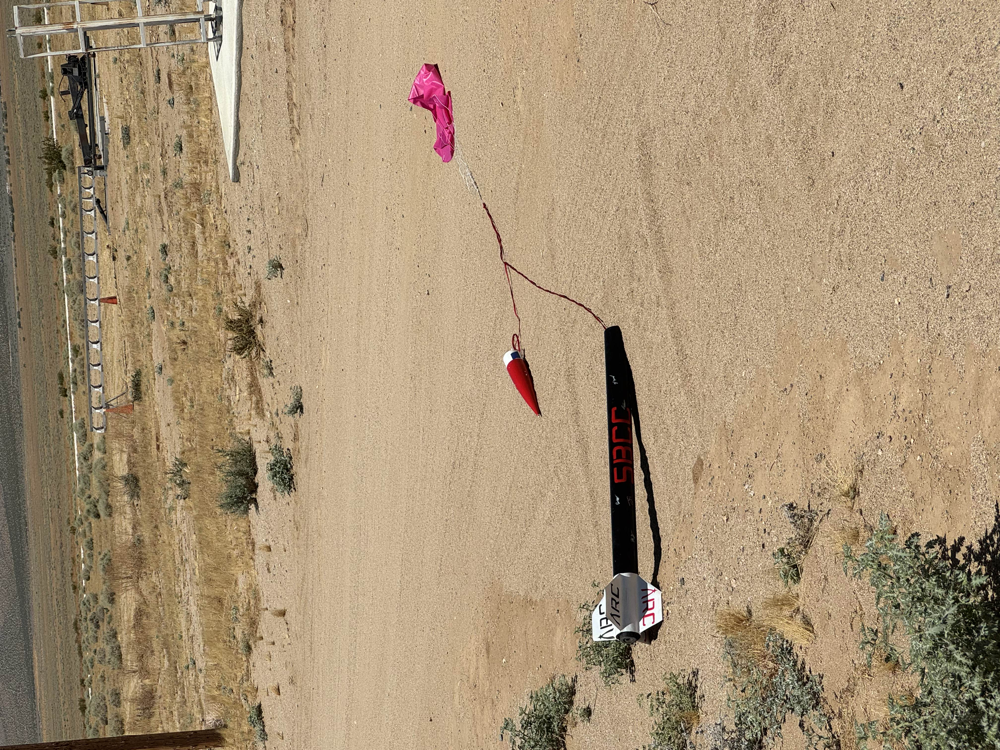

THRUST Propulsion Sub-Team Current · Cal Poly Pomona
Feed-system, injector, and test-stand hardware design for student liquid-rocket propulsion at Cal Poly Pomona.
Organization
THRUST, Cal Poly Pomona
Role
Propulsion Sub-Team Member
Focus
CAD Packaging, Plumbing & Test Hardware
Status
Active (Junior Year)
As a junior in Aerospace Engineering at Cal Poly Pomona, I contribute to the THRUST propulsion sub-team, translating fluid-system schematics into manufacturable CAD assemblies, mounting brackets, and pressurized test-stand interfaces. Working alongside upperclassmen and propulsion leads, I focus on fastener accessibility, O-ring gland tolerances, and clean routing for pressure transducers and solenoid valves so hardware can be assembled and leak-checked safely on the test stand.
Composite airframes, custom CAD recovery bays, and desert launch operations with SBCC Rocketry.
Team
SBCC Rocketry Club
Airframes
3 Composite Vehicles (L1/L2 Class)
Role
Avionics Bay CAD, Layup & Pad Ops
Recovery
Dual-Deploy Black Powder / Altimeter

Post-flight recovery walk in the Mojave desert after a clean dual-deploy parachute descent.
Across three high-power rocket builds with Santa Barbara City College's rocketry team, I worked across composite fiberglass layups, CNC/laser-cut centering rings, and custom 3D-printed avionics sleds. My primary ownership centered on packaging dual-deploy flight computers, LiPo batteries, and screw switches inside tight coupler bays while keeping charge wells accessible for range-safety inspection.
In Onshape and SolidWorks, I modeled modular avionics sleds with dedicated wire-routing channels and threaded brass inserts so flight altimeters could be swapped or bench-tested between launches without disturbing bulkheads. On the shop floor, I assisted with wet-layup fiberglass airframe tubes, fin alignment jigs, and high-temp epoxy fillets.
Custom avionics sled CAD packaging flight computers and battery retention.Composite tube preparation and fin-slot alignment in the lab.Launch-rail fit check and final continuity verification prior to pad arming.
Launch Operations & Post-Flight Inspection
At launch sites in the Mojave desert, I helped execute pre-flight range checklists, verify altimeter continuity beeps on the rail, and inspect airframe couplers and shock-cord mounts after recovery to document char marks or shear-pin wear for the next flight iteration.